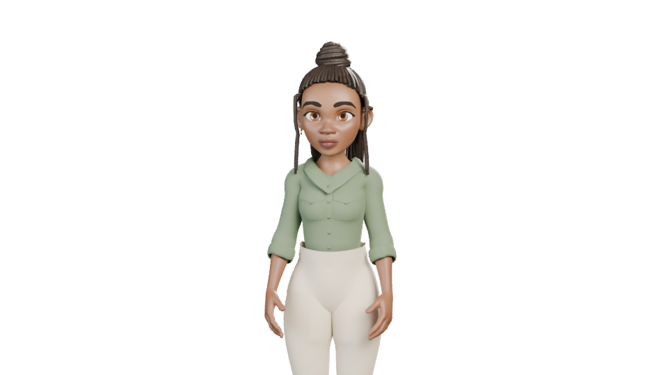

The learner opens. KAIRO guides the rest.
Concept camera footage. Learner voice is a placeholder. KAIRO uses the app's default Google Aoede voice, UK English. No autoplay.Meet KAIRO. Bring your material. Learn at your pace. Explore it. Practise, and build evidence of your skills. Next: connect that evidence to roles and proposed rewards. Put knowledge to work.
Download narration
Download production assets · Luma prompt · Claude continuation brief · Production evidence and limits